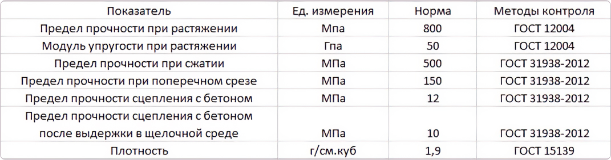

Композитная
стеклопластиковая арматура
это разновидность арматуры, представляющий собою прочный стержень, изготовленный из стекла и пластика и укреплённый за счёт основы из эпоксидной смолы. Она во много раз превосходит металлическую арматуру и это именно тот случай, когда товар ниже по цене, однако превосходит дрогой аналог по качеству.
Заказать
Композитная арматура
имеет ряд преимуществ

- Способствует повышению уровня надежности при эксплуатировании армированных сооружений и конструкций
- Не требует использования специального грузоподъемного оборудования и строительного оснащения при проведении монтажных работ
- Существенно сокращает затраты на транспортировку, за счет небольших габаритов и маленького веса
- Сокращает срок, отведенный на работы по монтажу каркаса, за счет своего легкого веса, упругого материала и длины без ограничений
- Нейтрализует риск больших убытков из-за приостановления работы предприятия на период ремонта, за счет отсутствия коррозийных воздействий и необходимости в сложном обслуживании.
- Маловесность, в 10 раз меньшая по сравнению с весом стального аналога по средним показателям
- Повышенная стойкость к коррозии, гниению, деформации и трещинам
- Повышенная стойкость к химическим реагентам ( щелочь, кислота, соль, антиморозные и антигололедные добавки и вещества )
- Сниженная теплопроводность — не превращается в мостик для холодного воздуха
- Обладает диэлектрическими свойствами – плохо пропускает электрический ток
- Обладает стойкостью к широкому спектру температурных режимов эксплуатации: от -70 С до +100 С